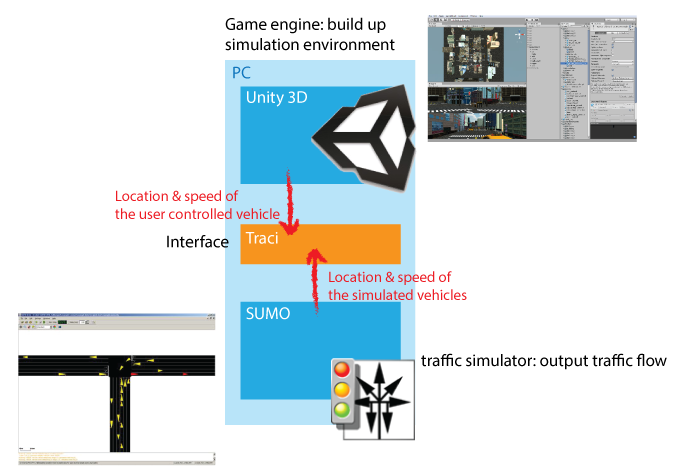
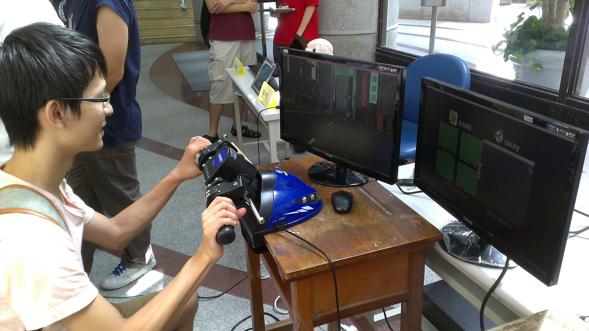
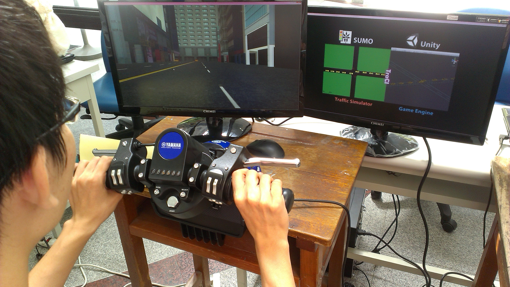

Lynda Lin (Lin Yung-Ta)
Motorcycle Simulator
Motorcycle Simulator
吳欣宜、林湧達
Independent Study: Part of Intelligent Traffic System Project.
2012-13.
To evaluate a driving or riding interfaces, it's impropriate to put users under real environment since we cannot take the risk of car accident. Therefore, a realistic simulator is proposed by connecting Unity and traffic simulator "SUMO". SUMO calculates behaviors of simulated surrounding vehicles while users control their vehicles through Unity. Through "TraCI", the information of positions exchanges.
demo video

System Architecture


demo scene